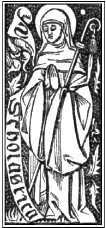

| Contents | S. Scholastica St. Scholastica |
Home |

 |
St. Scholastica is the twin Sister of St Benedict. They were both born in Nursia in central Italy sometime around 480 AD. She became a nun and lived at Plombariola, about five miles south of Montecassino, living under the direction of her brother, St. Benedict. It is likely she was the Abbess of a nunnery there which was under St. Benedict's care. She is considered to be the first nun of the Benedictine order. She is usually shown habited as a nun with a crozier and Crucifix, or with a dove flying from her mouth. Her feast day is February 10.
Since men were not allowed in the nunnery, nor women in the monastery, she and her brother would meet yearly at a location midway between the two. Pope St Gregory the Great gives the details of their last meeting. Her brother was anxious to return to the Monastery after their meeting. St Scholastica begged him to stay awhile longer, but he refused. She prayed for God to delay her brother's departure and a huge rainstorm suddenly developed and blocked his departure. Thus they continued their visit through the night. Three days later, St. Benedict saw her soul ascend into Heaven in the form of a dove. Her relics, along with those of her brother's are located under an altar of the abbey of Montecassino. |
Preces et Devotiones ad S. Scholasticam (Prayers and devotions to St. Scholastica)
- Commemoratio Sanctae Scholasticae
Commemoration of St. Scholastica- Litaniae de Sancta Scholastica
Litany in Honor of St. Scholastica
<- Prev |
Next-> |